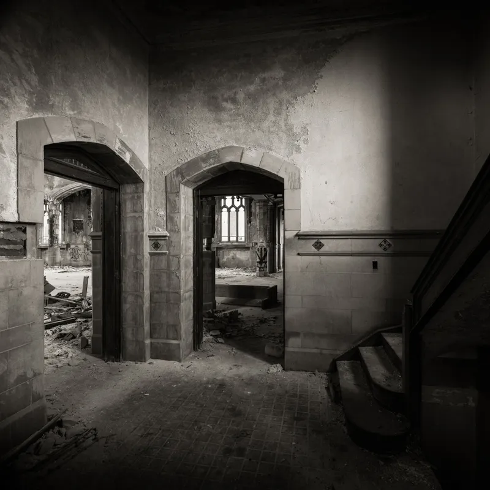
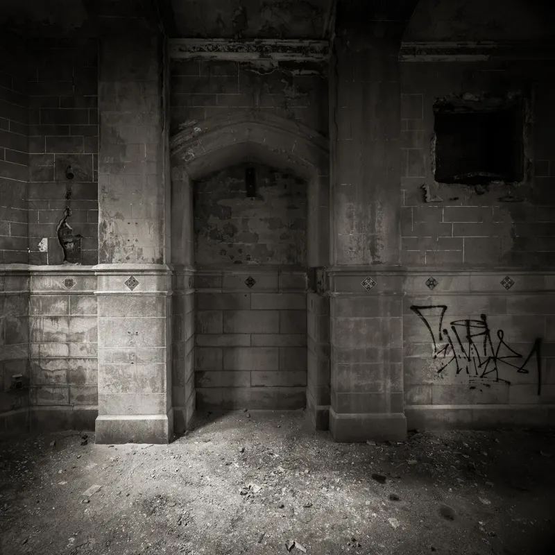
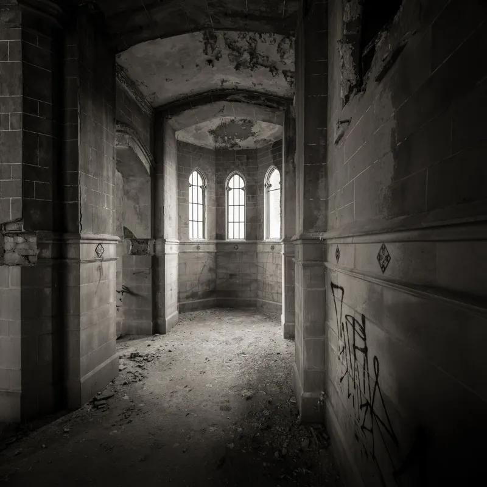
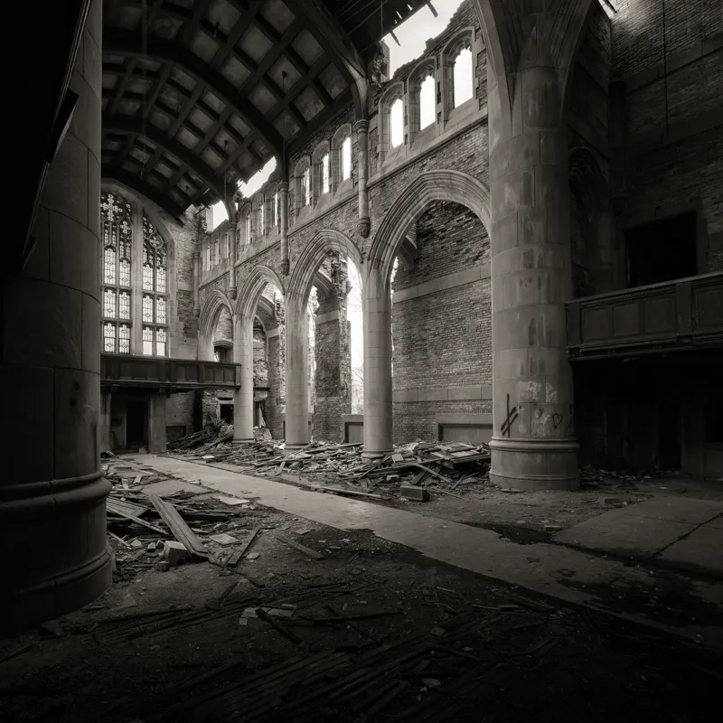
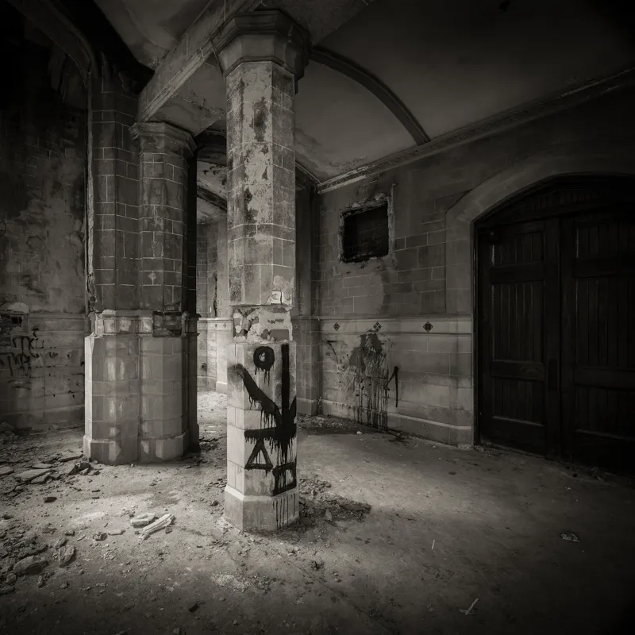
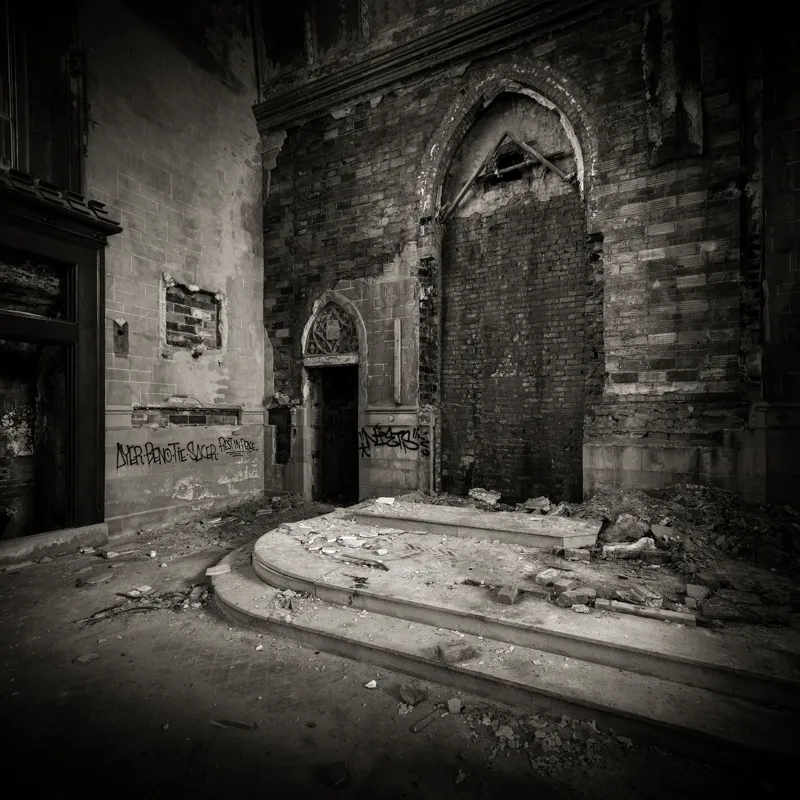

A Threatened Legacy
Silver Award — 2013 PX3 Prix de la Photographie Paris — Professional Fine Art, Architecture
View As Framed Prints
These images are a departure from my long exposure landscapes, returning to my roots in historical architectural studies. In the early 1990s I spent several years documenting historic churches for a book project called A Threatened Legacy: Detroit's Historic Churches — documenting structures threatened by closure and demolition due to Detroit's severe population decline. Fifteen years later I revisited some of these structures, which have since fallen into decay.

Study VI

Study IV

Study III

Study II

Study I

Study V

Study VII